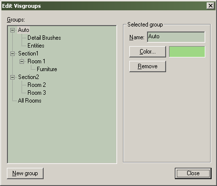

Grouping and VisGrouping
Even relatively modest Hammer levels can contain hundreds—even thousands—of objects. Hammer offers two ways of keeping track of items in your level: normal grouping and visibility grouping (VisGroups).
Note: VisGroup refers to "visibility group" and has nothing at all to do with the VVIS compile tool. Both groups and VisGroups only affect what you see in Hammer and have no in-game effect.
Groups
Normal grouping is used to "glue" object selections together.
The object shown above is made of eight brushes. If you were to click on a single brush when the object is ungrouped, only that brush would be selected; you'd have to CTRL-click each piece to select the whole thing (or drag a selection box over the whole thing). When the object is grouped, however, you can click on any individual brush to select everything in entire group.
- Brushes do not need to touch in order to be grouped together.
- Groups may contain any combination of brushes and entities.
- You can work on an individual piece of a group of objects by enabling the Ignore Groups option.
- Grouped objects can be combined with VisGroups (see below).
- Grouped objects have no relation in the Source Engine, grouping is purely for selection purposed in Hammer.
To group a set of objects:
- Select the objects you wish to group together.
- Select Group from the Tools Menu, or press CTRL+G.
- The objects are grouped together and can be selected, moved and edited as one.
VisGroups
VisGroups stands for visibility groups. VisGroups make managing objects easy by letting you control what you see on your screen. With VisGroups, you can arbitrarily assign objects to a specific group; you can then turn the visibility of that group on and off.
Hiding eight objects:
- Select the eight objects you wish to hide.
- Choose Hide selected objects from the View Menu.
- The New VisGroup dialog will appear. Make sure Create a New VisGroup is selected, and click OK.
- A VisGroup is created named "8 objects" and is marked as not visible in the Filter Control Bar.
Let's say you have the following section in your map:
Now, you'd like to be able to make the furniture a group, but you still want to move each piece around independently from the others. This is precisely what VisGroups are good for.
First, select the furniture pieces, then choose Hide selected objects from the View Menu. The New VisGroup dialog will appear:
Click OK to make a new VisGroup. This will do two things: hide the objects in the 2D and 3D views, and create a new VisGroup with the selected objects.
The new VisGroup will appear in the Filter Control toolbar named after the number of objects it contains. To change the name of the VisGroup to something more suitable, select the VisGroup, then click on it again. You will be able to change the name to whatever you like. You can also click to the left of the name and a hand will appear next to the VisGroup. This is how you set which VisGroups are visible and which are not. You must press the Apply button for the changes to take effect.
Some things you can do with the mouse in the Filter Control toolbar:
- Drag one VisGroup onto another VisGroup. The first VisGroup will be merged with the second VisGroup, and the resulting VisGroup will keep the name of the second.
- Drag a VisGroup out of the Filter Control dialog. A dialog box will open asking if you wish the the VisGroup to be deleted.
- Drag a VisGroup with the Right mouse button on another VisGroup. The first VisGroup will become a parent of the second.
- Drag a child VisGroup onto the white space at the bottom of the VisGroup list. The parent-child relationship will be removed and the VisGroup will appear back in the top level of the list.
If you make the furniture group visible, then select it and press the Mark button, the group will be highlighted in the 2D and 3D views.
The Edit button brings up the Object Groups dialog.

This dialog allows you to change the name and color of existing VisGroups, or delete them. Deleting the VisGroup does not actually delete the group's objects, it just eliminates the VisGroup, making them individual unlinked objects. You also have the option of creating new (empty) VisGroups with the New Group button.
The last way you can use VisGroups is through an Object Properties, in the VisGroup tab. To assign the object to a VisGroup, just select the appropriate group. To remove the VisGrouping from this object, simply uncheck all of the boxes.

© 2004 Valve Corporation. All rights reserved. Valve, the Valve logo, Half-Life, the Half-Life logo, the Lambda logo, Steam, the Steam logo, Team Fortress, the Team Fortress logo, Opposing Force, Day of Defeat, the Day of Defeat logo, Counter-Strike, the Counter-Strike logo, Source, the Source logo, Hammer and Counter-Strike: Condition Zero are trademarks and/or registered trademarks of Valve Corporation. Microsoft and Visual Studio are trademarks and/or registered trademarks of Microsoft Corporation. All other trademarks are property of their respective owners.